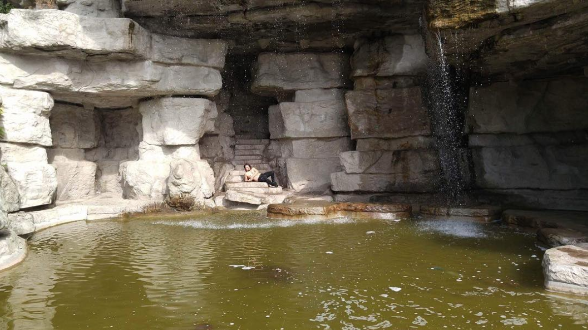

Blake Ortego Jr., aka Now I Am Become Death, is a multifaceted artist. Personal, open, honest and often intense. The Pieces, a composition and short film about insecurity, obsession and ego. The Repressed, a composition about sexual repression accompanied by an interpretive performance by artist Derek Joseph. The Ego, a composition and visual performance about ego and social perception.

test